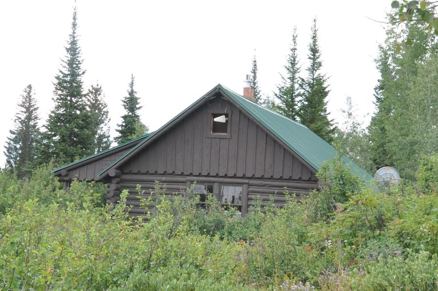
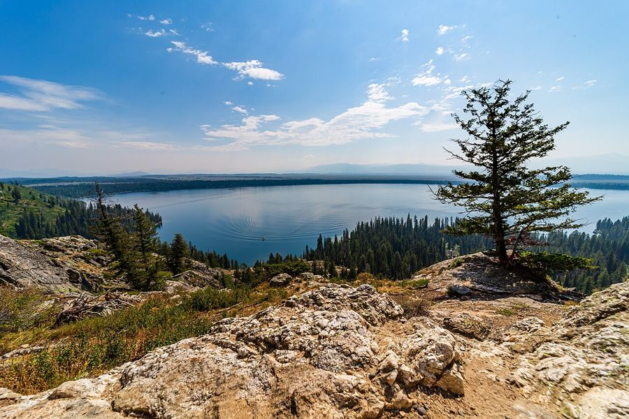

The route starts at Jenny Lake in Grand Teton National Park, about 6,800 feet up.
Photo: Magicpiano · CC BY-SA 4.0 · Wikimedia Commons

You have reached Inspiration Point, a rock ledge above Jenny Lake with a wide view of the valley.
Photo: aparlette · CC BY 2.0 · Wikimedia Commons